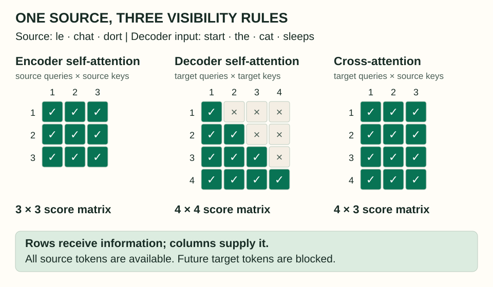
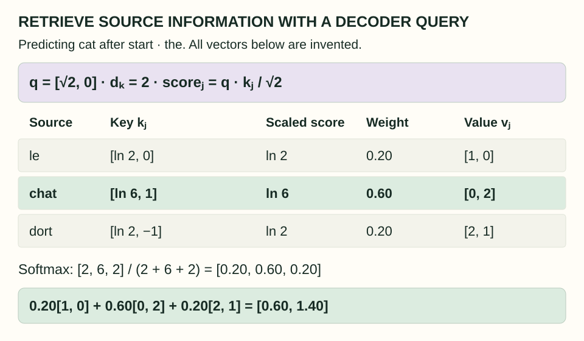
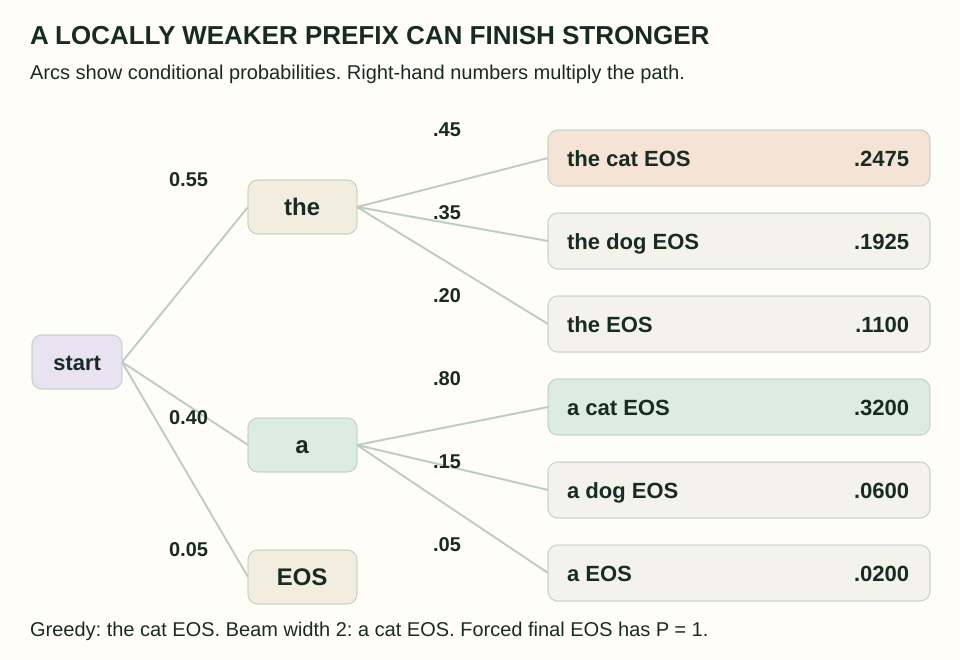
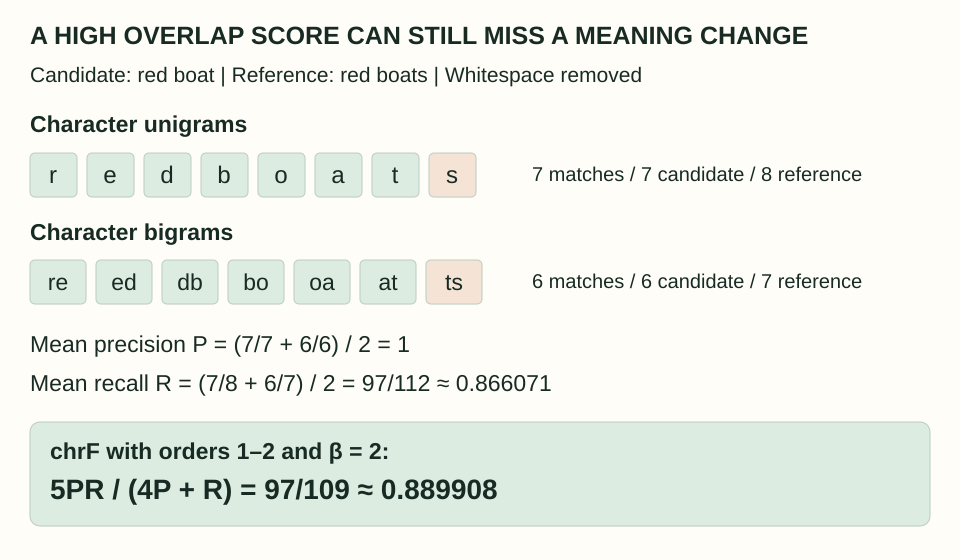

Machine Translation: Meaning, Search, and Evaluation
A translation must express the source’s meaning in a language with its own word order, grammar, and ambiguities. A neural model assigns probabilities to possible outputs; a search algorithm chooses one; an evaluation procedure asks whether that choice actually helped a reader.
What you will learn: trace information through an encoder–decoder, calculate cross-attention, follow every pruning decision in a small beam search, and compute a character-overlap score while recognizing what it cannot establish.
This original tutorial accompanies Chapter 13, “Machine Translation”, in Jurafsky and Martin’s August 19, 2026 draft. The reading map is language variation (§13.1), data and tokenization (§13.2), encoder–decoders (§13.3), decoding (§13.4), limited-data settings (§13.5), evaluation (§13.6), and bias (§13.7). All diagrams, small probability models, and exercises here are newly constructed.
1. Why translation changes more than words
Start with le chat noir: an ordinary English rendering is the black cat. The adjective changes position. A translation system that substituted one English word at each French position would produce the wrong ordinary order. Even this three-word phrase requires a relationship between words, rather than three independent dictionary lookups.
Structural differences can reach much further. A language may usually place the object before the verb, express a relationship with a postposition rather than a preposition, or package information into an inflected word that another language expresses with several words. Basic word-order labels describe tendencies; they do not give a mechanical permutation that works for every sentence.
Lexical ambiguity creates a different problem. In English, light might concern illumination, weight, or a color. Translating a light suitcase requires resolving which sense is intended. Conversely, a source expression may leave a distinction unspecified that the target language encourages or requires the translator to express. A model cannot recover missing information merely by having a larger vocabulary.
Omitted subjects make document context especially useful. Spanish Llegó temprano can be rendered as He arrived early or She arrived early, among other context-dependent possibilities. The Spanish sentence alone does not choose between those two pronouns. A previous sentence may establish the person; translating each sentence independently discards that evidence. Where appropriate, an English rendering can also preserve unspecified gender, for example with singular they.
Languages also distribute meaning differently across verbs and surrounding phrases. An English motion verb can encode how something moves while another expression supplies its path. A translation may express that path in the main verb and the manner elsewhere. Such changes explain why a faithful translation need not retain the same word count or one-to-one word correspondences.
The intended use determines the quality question. Reading a foreign-language page for general understanding, producing a draft for a translator to post-edit, localizing a product, and translating live speech create different constraints. A full-sentence encoder assumes the source is already available. Simultaneous translation must additionally decide when to wait for more source context and when to speak.
2. Build the right learning pairs
The basic supervised example is a source–target pair: source tokens x and a corresponding target translation y. A collection of such paired texts is a parallel corpus, or bitext. Two files in different languages are not automatically aligned training data.
Suppose one version says The ferry left. It reached the island at noon. while its translation combines both statements into one sentence. Pairing sentences by line number would shift all subsequent examples. A sentence aligner should consider one-to-one links, one-to-many links, and omissions. These links describe corresponding spans, not individual word alignments.
A useful alignment pipeline embeds candidate spans in a shared multilingual space, scores their compatibility, and searches for a coherent sequence of links. Cosine similarity supplies evidence of semantic proximity; length and neighborhood normalization help discourage implausible matches. Dynamic programming can combine local link costs while respecting document order. A high cosine score still needs scrutiny: repeated navigation text and unrelated boilerplate can look deceptively compatible.
After alignment, inspect language identity, duplicates, malformed text, copied source passages, and obvious translation failures. Keep development and test material separate from training; split related documents together when sentence-level splitting would leak nearly identical content. A clean-looking average loss cannot tell you that every training pair is actually a translation.
Subword tokenization controls what the model can read and emit. A shared source–target vocabulary can reuse names, numbers, and character sequences across languages, although sharing is a design choice rather than an architectural requirement. BPE builds larger units through merges; unigram tokenization starts with a larger candidate inventory and prunes it while fitting token probabilities. WordPiece is another vocabulary-building approach. None should be equated with linguistic words.
SentencePiece is a tokenizer toolkit that supports more than one algorithm, including unigram and BPE; its name alone does not identify the segmentation model. Record the actual model and normalization settings. Shared spellings facilitate representation reuse, but do not prove shared meaning: a token with the same spelling in two languages can still be a false friend.
3. Three attention patterns
An encoder–decoder treats translation as conditional generation. If y includes its final end token, the sequence probability factors as:
Pθ(y | x) = ∏t=1…m Pθ(yt | y<t, x)
The encoder transforms all n source positions into contextual vectors Henc of shape n × d. This is a sequence of vectors, not one vector that must hold the whole sentence. The decoder combines the generated target prefix with those source representations to predict its next token.
| Attention operation | Queries | Keys and values | Visibility |
|---|---|---|---|
| Encoder self-attention | Source states | Source states | Entire available source |
| Decoder self-attention | Target states | Target states | Current and earlier target input positions |
| Decoder cross-attention | Target states | Encoder outputs | Entire available source |

A decoder block first mixes the permitted target-prefix information with causal self-attention. Its cross-attention sublayer then uses the current decoder stream for queries and the encoder output for keys and values. Feedforward sublayers, normalization, and residual connections continue transforming the result. In a pre-normalized block, the query input is the normalized stream entering cross-attention; it is not the raw token ID or a future target.
Q = D WQ, K = Henc WK, V = Henc WV
CrossAttention(Q,K,V) = softmax(QKᵀ / √dk)V
Here D contains the decoder states supplied to that sublayer. For m target queries and n source keys, QKᵀ has shape m × n. Each row softmax normalizes across source positions. The source values may have a different width dv, so the head output has shape m × dv.
A cross-attention row you can calculate
Use source le chat dort and target prefix start the, while predicting cat. To make the arithmetic transparent, invent a two-dimensional query q = [√2, 0]. Let the source keys be [ln 2, 0], [ln 6, 1], and [ln 2, −1]. Dividing each dot product by √2 gives scores ln 2, ln 6, and ln 2. Exponentiating produces 2, 6, and 2, so the attention weights are exactly 0.2, 0.6, and 0.2.

The largest weight falls on chat, but this is not a hard dictionary lookup. Its contextual encoder state can already contain information about le and dort. Different heads and layers may combine positions differently. An attention plot is useful for inspecting this computation; interpreting every bright cell as a definitive word alignment goes further than the computation guarantees.
4. Train with the correct target prefix
For our example, teacher forcing constructs the following shifted pair. Treat each displayed item as one token for this illustration; real subword tokenization may change the positions.
Source: le chat dort
Decoder input: BOS the cat sleeps
Target label: the cat sleeps EOSThe source encoder can use all three source tokens. Each decoder position uses the correct preceding target tokens from the training pair. Causal attention prevents it from reading a later input containing the answer it is meant to predict. Labels are shifted even though all positions can be processed together within each training layer.
If the four correct-token probabilities are 0.8, 0.5, 0.6, and 0.9, their product is 0.216. The mean token cross-entropy is −ln(0.216)/4 ≈ 0.383119 nats. End-of-sequence is a real prediction; padding should not add loss. A batch reduction should specify whether it weights target tokens equally or averages sentence means.
At inference, the decoder instead conditions on its own earlier choices. A wrong choice changes the prefix for all subsequent predictions. Encoder outputs can be computed once for a fixed source, while decoder self-attention caches grow as tokens are generated; cross-attention keys and values can also be reused within each decoder layer.
Check yourself: Is it target leakage to let the first output position attend to the last source token?
No. In ordinary full-sentence translation, the complete source is an observed input. The forbidden information is a future target token that would reveal the answer. A streaming translation system has a different source-availability constraint.
5. Search beyond the first attractive word
Greedy decoding chooses the highest-probability next token and commits immediately. That local choice need not belong to the highest-probability complete sequence. Beam search keeps several candidate prefixes, extends each, and prunes the combined list by accumulated score.
Consider this entirely specified tiny model for one fixed, unspecified source. It is designed to illustrate search, not translation quality. Initially P(the) = 0.55, P(a) = 0.40, and P(EOS) = 0.05. After the, the probabilities of cat, dog, and EOS are 0.45, 0.35, and 0.20. After a, they are 0.80, 0.15, and 0.05. Every two-word prefix then ends with probability one.

a branch before seeing its strong continuation. Right-hand numbers are complete-path probabilities, including EOS. The immediate EOS path has probability 0.05.Greedy chooses the cat EOS, with probability 0.55 × 0.45 × 1 = 0.2475. A beam of width two initially keeps the and a. After extending both, the best prefixes are a cat at 0.40 × 0.80 = 0.32 and the cat at 0.2475. Both then end. A wider first step allowed the initially weaker choice to survive.
Implementations ordinarily accumulate log probabilities: score(prefix + token) = score(prefix) + ln P(token | prefix, source). This avoids multiplying many tiny values. Larger scores are better; −1.14 beats −1.40. Multiple beam entries share one trained model with different decoder states; they are not separately trained translators.
Inspect every beam-search decision
Change the beam width or the initial probability of a. EOS stays at 0.05 and P(the) becomes 0.95 − P(a). All other branches remain fixed. The lab compares the result with exhaustive enumeration of all seven complete paths.
This follows the chapter’s shrinking-beam convention: an accepted EOS path is saved and consumes one beam slot; it is never extended. Ties use a fixed token order. All paths finish within three steps, so no length limit or stopping heuristic is needed here.
Beam search is still approximate: a pruned prefix cannot return later. Improving the search score does not necessarily improve adequacy, because the model’s probability distribution can favor the wrong meaning. Increasing width is therefore a search change to evaluate, not a universal quality guarantee.
Length adds another complication. A complete sequence includes more probability factors when it is longer. For example, a two-token completion with log probability −2 outranks a four-token completion at −3 under raw probability. Dividing by length reverses them: −1 versus −0.75. Length normalization changes the objective; it is not merely a numerically stable way to compute the same probability. Specify the formula and whether EOS counts. Our lab deliberately uses raw probabilities, with EOS included.
Check yourself: If P(a) becomes 0.35, does greedy recover the best complete path?
No. P(the) becomes 0.60, so greedy returns the cat EOS at 0.60 × 0.45 = 0.27. The competing a cat EOS has probability 0.35 × 0.80 = 0.28. A beam of two retains it. The gap is small, but the search error is real.
6. Choose by expected utility
Maximum-probability decoding asks which single string the model favors most. Minimum Bayes risk decoding asks which candidate minimizes expected loss, or equivalently maximizes expected utility, against possible translations. This distinction matters because many different strings can express the same meaning.
In a sample-based approximation, draw possible reference translations c₁,…,cS from the model and score each candidate y by the average utility (1/S) Σ util(y,cs). A character or embedding similarity metric can supply the utility. These are model-generated pseudo-references, not human-verified answers.
| Candidate | Against A | Against B | Against C | Mean utility |
|---|---|---|---|---|
| A: the small boat | 1.0 | 0.9 | 0.5 | 0.8000 |
| B: the little boat | 0.9 | 1.0 | 0.7 | 0.8667 |
| C: a tiny vessel | 0.5 | 0.7 | 1.0 | 0.7333 |
This utility chooses B. The numbers are illustrative, not measured chrF or BERTScore values. Keep the sampling and weighting assumptions explicit: repeated independent samples carry repeated weight; deduplicating them into a uniform set changes the estimate. Agreement can reward a useful consensus, but a pool of candidates sharing the same mistranslation can agree with one another and still be wrong.
7. Learn when parallel data is scarce
Backtranslation uses monolingual text on the target side. To improve a source→target translator, first train or obtain a target→source model. Translate natural target sentences backwards to create synthetic source sentences. Pair each synthetic source with its original, natural target and add those pairs to forward training. The direction is easy to mix up:
natural target y → reverse translator → synthetic source x̃
Forward training pair: (x̃, y)
The forward model receives natural target-language writing as supervision even though the source side is imperfect. The original Sennrich, Haddow, and Birch study investigates this use of monolingual data. It is augmentation of training data, not a round-trip test proving that a proposed translation is correct.
Quality depends on the reverse model, the relevance of the monolingual corpus, how synthetic sentences are decoded, and the mixture with genuine bitext. Sampling can create different synthetic sources from greedy or beam decoding. Synthetic volume alone is not evidence of useful information: a reverse model that repeatedly invents the same wrong detail can reproduce that error throughout the augmented corpus.
Multilingual models share parameters across translation directions and use language identifiers to specify the source or requested target. Sharing may let a language benefit from related patterns seen elsewhere. The training mixture still controls whose data dominates, and shared subwords cannot substitute for absent supervision in every setting. Evaluate each language direction and relevant domain rather than reporting only a pooled score.
“Low resource” concerns available data and infrastructure, not the complexity or value of a language. Involving speakers in selecting material, defining useful applications, checking translations, and designing evaluations addresses problems that automatic filtering cannot resolve alone. A news-trained system and its metric may both behave poorly on community-specific expressions or conversational speech even when their aggregate benchmark result looks healthy.
8. Measure adequacy, fluency, and overlap
Adequacy asks whether the target preserves the source’s information. Fluency asks whether the target reads naturally. An elegant sentence with a reversed negation can be fluent and inadequate. A stilted sentence can preserve the essential facts. Judge these dimensions separately.
Bilingual evaluators can compare source and output directly; a trustworthy reference can also support evaluation by target-language readers. Give raters clear criteria, context, and examples of errors. Pairwise preferences and minimally post-edited outputs provide alternatives to numerical ratings. Post-editing can expose what a translator actually had to repair, though editing conventions and evaluator expertise still matter.
Compute chrF from the characters
The chrF metric compares character n-grams in a candidate and reference. For each order, count matching occurrences with clipping: a candidate cannot receive more matches for an n-gram than the reference contains. Divide matches by candidate counts for precision and reference counts for recall, then average across orders.
Take candidate red boat and reference red boats. We remove whitespace, preserve case, and use only orders one and two so every count is visible. This is a deliberately small chrF configuration, not the usual six-order setup.

db. Tokenization and preprocessing conventions are part of the metric definition.Our mean precision P is 1; mean recall R is (7/8 + 6/7)/2 = 97/112. Combine them with the F-score parameter β:
chrFβ = (1 + β²)PR / (β²P + R)
With β = 2: 5PR / (4P + R) = 97/109 ≈ 0.889908
β = 2 emphasizes recall; the formula contains β² = 4. Some tools display the score multiplied by 100, which would be 88.9908 here. It is not “89% of the meaning preserved.” The singular/plural distinction changed, even though almost every character matched.
Repetition also requires careful counting. If the reference is boat and the candidate is boatboat, only four unigram occurrences match, not eight. Clipping gives unigram precision 4/8. Using sets instead of occurrence counts would erase the repeated-output error.
BLEU uses clipped word n-gram precision, a geometric mean, and a brevity penalty. It is sensitive to tokenization and is conventionally a corpus-level measure. Do not average arbitrary sentence BLEU values and assume they reproduce corpus BLEU. For either metric, report preprocessing, settings, references, aggregation, and software version; a number without its measurement procedure is hard to compare.
Embedding metrics and uncertainty
BERTScore replaces exact token matches with similarities between contextual token embeddings. Each candidate token finds its best reference match for precision; each reference token finds its best candidate match for recall. These maxima are taken independently: they are not a one-to-one alignment. This can recognize paraphrase that a character metric misses, while still inheriting the embedding model’s weaknesses.
Learned evaluators fit human quality judgments. For example, the original COMET framework uses multilingual representations and can incorporate the source as well as the candidate and reference. Such a score depends on the checkpoint, languages, domains, and training judgments. A fluent paraphrase with an incorrect number remains an error even if a metric under-penalizes it.
To compare two systems, use the same test examples and references. A paired bootstrap repeatedly resamples the same example indices for both systems and recomputes their score difference; independently resampling them loses the pairing. For document-dependent evaluation, resample suitable document units rather than pretending neighboring sentences are independent. Report the estimated difference and uncertainty, and inspect consequential error types alongside the aggregate.
Check yourself: Does a high chrF score establish that a translation preserves negation?
No. A short inserted or omitted negation can reverse a statement while leaving most character n-grams unchanged. Include targeted examples and human adequacy judgments for such distinctions; an overlap metric does not directly represent their logical consequences.
9. Evaluate the distinctions readers depend on
Translation can silently introduce attributes that the source did not specify. If an occupation or name causes the model to invent a person’s gender, the output expresses an assumption as though it were source information. Test matched examples that vary these cues while keeping the intended meaning fixed, and assess consistency across language directions.
Likewise, probability is not a certificate of correctness. A confident model can prefer a familiar but inaccurate phrase. Systems intended for consequential communication need a way to identify uncertain cases and support human review; evaluate that behavior on the actual task rather than selecting a confidence threshold from a few attractive examples.
Historically, MT has used direct dictionary-based systems, structural transfer rules, statistical phrase models, and neural models. The encoder–decoder makes source information accessible through learned representations, but those vectors are not automatically a perfect, language-independent meaning representation. The enduring questions remain concrete: what information did the source contain, which possibilities did search discard, and which errors did evaluation notice?
For a reproducible calculation, download the standard-library Python example and run python3 translation-example.py. It recomputes the attention row, training loss, exhaustive and beam results, chrF counts, and utility means. Its assertions check probability conservation and compare the search against all complete paths; it does not load or evaluate a trained translation model.
The next companion, RNNs and LSTMs, studies recurrent sequence representations, including ideas that helped shape earlier neural translation systems.